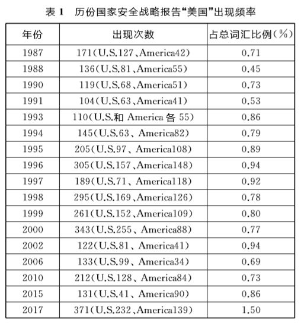
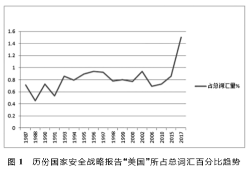
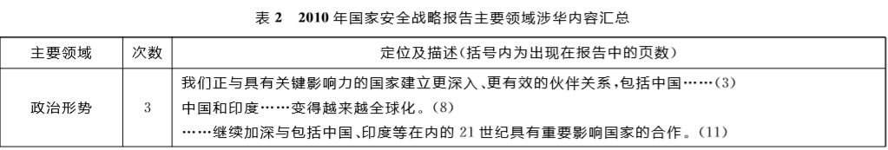
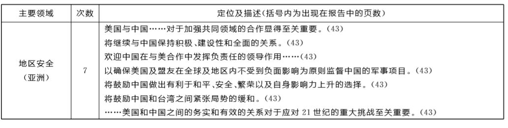
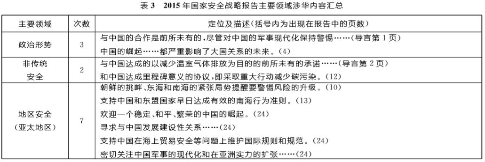
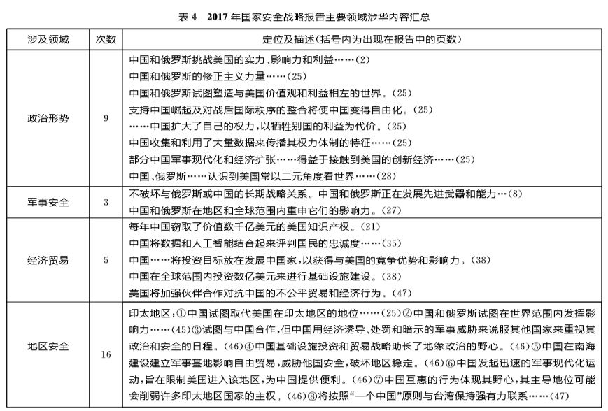
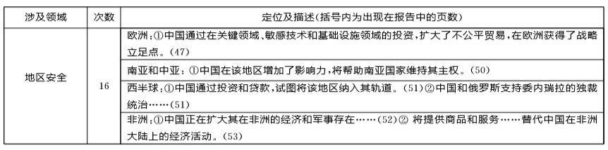
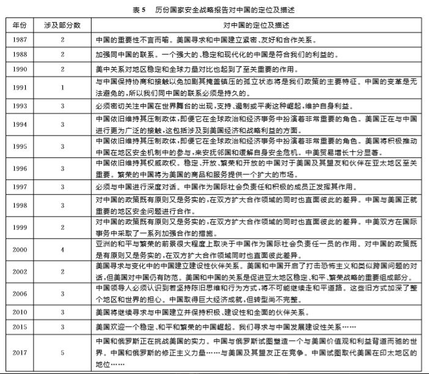
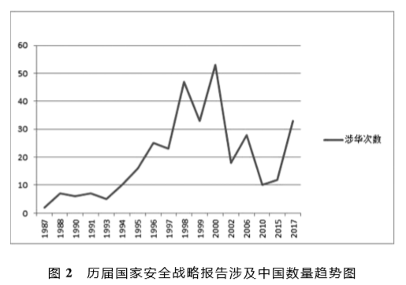

收录于合集
王秋怡
外交学院国际关系研究所博士后
【内容提要】2017年12月，美国总统特朗普发布了任内首份《国家安全战略》报告，重申了“美国优先”和“美国再次伟大”原则，以更具竞争性的视角总结了美国当前所面临的威胁，强调了经济安全对国家安全的重要性。本文试图从文本分析的方法入手，分析美国国家安全战略报告的发展变化及特朗普政府国家安全战略的核心内容、主要政策倾向以及可能的影响。
【关键词】特朗普政府；《美国国家安全战略》报告；中美关系
２０１７年１２月１８日，美国总统特朗普在任期将满一年之际，公布了任内首份国家安全战略报告。该报告以“美国优先”为基本原则，以“保卫美国国土安全、促进美国繁荣、强力捍卫和平及提升美国影响力”为四大支柱，从“有原则的现实主义”出发，描绘了美国当今 所处的世界及将要面对的挑战，强调美国必须摆正心态，维持传统优势，努力复兴美国经济，重建美国军力，保卫疆土，提升自我价值。报告体现了特朗普政府的“单边主义”和战略收缩政策，表明了美国在国际事务中维护领导地位的决心以及实现国家利益的政策路 径。本文从报告文本入手，对特朗普国家安全战略报告进行比较分析和探讨。所谓文本分析是文本挖掘、信息检索的一个基本方法，它把从文本中抽取出的特征词进行量化来表示文本信息。 本文主要从报告中主题词出现的频率及相关领域中的关键词来对报告进行系统地分析和归纳总结。对报告内容和逻辑最为直观的了解，就是通过报告中出现的高频词汇，因为这些“词汇重复和模式化是建构主题的主要方式，也是政治家用来表明自己关注点的一种方式。”
一、特朗普国家安全战略报告特点
**
与里根政府的 “遏制”，老布什政府的“超越遏制”，克林顿政府的“参与和扩展”，小布什政府的“先发制人”，奥巴马政府的“巧实力”不同，特朗普政府的报告有其自身特点。 从形式上看，在报告所用的主题词词频与词汇的变化上，“伙伴”一词成为首次出现在国家安全战略报告前五的词汇，这一方面体现了美国与伙伴关系的加强，另一方面从涉及到领域和政策措施来看， 美国更强调与伙伴的责任分摊，体现了其本位主义。 此外，安全（117次）与经济（115次）出现的频率在历份报告中最为接近，强调了经济与安全的关联性。从篇幅来看，报告共68页，在１７份国家安全战略报告中列第二，仅次于2000年克林顿政府 ８４页的报告。从编排体例看，首次在标题中使用支柱一词来表明特朗普政府在 “美国优先”的原则下强调的四个优先，即保卫美国国土安全、促进美国繁荣、强力捍卫和平及提升美国影响力。从 “美国”一词出现次数和所占百分比看（见表１和图１），历届政府中，特朗普政府提及“美国”一词次数最多，所占总词汇百分比最高，几乎是最低年份１９８８年的４倍，这与报告中所提出的“美国至上”和“美国优先”一脉相承，体现了特朗普政府的功利现实主义和适度战略收缩态势。


从时间上看，新报告出台时间较快。相比前几任总统的安全战略报告，特朗普在新上任不到一年即推出，而前任奥巴马则是上任１６ 个月才出台，小布什更是２０个月再出台。特朗普之所以如此快便推出此报告，与其在任内的支持率相关。据美国有线电视新闻网（ＣＮＮ）报道，２０１７ 年３ 月民调数据显示，特朗普当时的支持率为 ４５％，而到2017年12月，支持率仅为３５％，成为美国历史上总统在就职第一年将结束时，民众支持率最低的一次。因此，特朗普急于采取有力措施，“做出成绩”，以证明自己的实力。
从内容上看，一是特朗普的报告对当前形势的判断较为严峻。报告开篇就宣称“美国正面临着极端危险的世界”，论述重要国家时，也采取极为严厉的措辞。报告称朝鲜为“流氓政权”，伊朗为“独裁”，中国和俄罗斯为 “修 正主义国家”。此外，全文共提及安全１１７次，威胁６１次，分布报告各主要部分，并从核威胁、放射性威胁、大规模杀伤性武器、生物威胁、恐怖组织、网络安全、意识形态威胁等方面对美国所面临的威胁进行了论述并提出了解决方案。
二是特朗普报告中的战略目标更为内向，突出了政策的收缩和内敛。报告开篇就称“美国人民选择我来使美国再次伟大，我将保证政府会将人民的安全、利益和幸福置于首位。”论述当前美国战略目标时，屡次提出“美国优先”，“美国”一词更是贯穿全文，出现次数高达 ２３２ 次和 １３９次，为历年报告之最。报告还提到主权３０ 次，国 界２５ 次，互 惠１５次。自冷战以来，未有战略声明如此内向。此外，报告中以美国为核心的论述比比皆是，如在论及多方关系时指出“美国必须加入并领导涉及多方的安排中去，才能形成许多有益于美国利益和价值的条款。”“当我们所有成员都承担更大的责任来公平分摊保护我们共同的利益、领土和价值时，北约联盟将会更强大。”由此得以窥见美国罔顾盟友利益的孤立主义倾向。
三是突出传统安全，非传统安全问题更加边缘化。相比奥巴马政府报告，此次报告没有过多涉及维护人权、气候变化及医疗保健的内容，报告全文仅有１次谈及人权，４次谈及气候，真正谈论自然界的气候仅１次，２次谈及医疗保健。尽管报告也对生物安全、网络安全、核安全等非传统安全问题有专门论述，但总体而言关注范围在缩小。相比之下，论及有关传统安全领域 的次数明显增多。如报告涉及军事共７０次， 战争２３次，守护２９次等。论述语言方面，对传统安全的论述更为精准、有力。如“要确保我 们军事力量所需的武器系统，这是我们打败敌人的致命武器。”“经济安全是国家安全。”“美国将会对面临全 世界日益增长的政治、经济、军事竞赛做出反应。”
四是战略报告与政策实施存在矛盾和不一致之处。每份国家战略报告都是对特定时期该国所处内外部环境和国际形势的反映，从中可以看出这个国家对国际形势的基本认识。战略报告是总体的一个指导原则，政策的匹配度与之会有差距，但若匹配度差距过大则表明此报告对形势判断的准确性出了问题。虽然在报告中论述了国家战略的实现方式，但在实际政策实施中与报告有较大矛盾。在谈及如何扩大美国影响力时，报告指出要“美国必须加入并领导涉及多方的安排中去，才能形成许多有益于美国利益和价值的条款。”“没有国家可以单方面地减轻人类所遭受的痛苦……”类似强调要加强合作与交流的论述不少，但在２０１７年６月３日，特朗普撕毁了之前气候治理承诺，宣布退出《巴黎协定》，２０１７年１０月１２日，美国又再次宣布退出联合国教科文组织。此外，报告７５ 次论及了联盟与伙伴，强调在共同防御、应对恐怖主义、互惠合作、责任分摊、网络安全等方面联盟与伙伴的作用，特别是强调“联盟和伙伴可以扩大我 们的实力。”更是将联盟与伙伴的重要作用一语道破，而现实是针对美国亲密的盟友与伙伴欧盟及北约，特朗普在任总统候选人时便大放厥词，认为欧盟是德国推动自身利益的工具，英国退出欧盟是好事。至于北约，特朗普认为北约的防务联盟已经过时，许多国家都不承担他们应支付的费用。可见特朗普行为与报告内容相距甚远。
五是报告首次将印太战略囊括其中，并将其作为区域战略首个谈论的内容。早在２０１７ 年１０ 月，美国国务卿蒂勒森在美国战略与国际研究所演讲中，首先提出“自由而开放的印太”的概念，１１月特朗普的亚太之旅再次显示了美国未来试图与印度、日本、澳大利亚四国共同构建本地区的安全架构。在报告中，“在印太地区，自由世界与压抑世界的地缘政治竞争正在发生。”表明此战略是美国对地缘政治变化做出的反应，印度洋地区在美国国家战略中地位的上升，美国将把太平洋与印度洋在战略部署上紧密地联系在一起，以维护其在这两个地区政治和安全上的主导权，对崛起的新兴大国进行战略牵制。而这种战略牵制主要是针对中国，美国一方面积极发展与日本和澳大利亚的传统战略关系，另一方面又主动拉拢印度，“欢迎印度以全球力量领导者和强有力的战略和防御伙伴的身份出现”，力图增加美国与日本、澳大利亚、印度的四边合作。但这并非意味着特朗普政府对亚太地区的忽略，就根本而言，特朗普政府的亚太政策取向与其全球战略逻辑是一致的，均体现了一种较为粗糙的现实主义倾向。乌克兰事件出现后，美国也并没有改变其亚太重心的战略选择。早在２０１３ 年１１ 月，美国国家安全事务助理苏珊·赖斯就表示，不管世界其他地区发生多么麻烦的事情，都不会影响美国把自己的注意力转移到亚洲来。
尽管报告有明显“战略收缩”和“冷战气息”浓重等特点，但一定程度上仍是美国传统安全战略的延续与发展，尤其是外交思想中的现实主义倾向。它提出的四大支柱 理念，秉承了措辞上的连贯性，强调盟友与伙伴的重要性，直接呼应了奥巴马与小布什时代的宣言。
二、特朗普国家安全战略报告涉华内容分析 ****
特朗普国家安全战略报告共提及中国３３次，在历份报告中排第３位。报告共分６个部分，５个部分都涉及中国，只在结论部分中未提及，可见涉华范围相当广。有关涉华内容，本文将特朗普时期与奥巴马时期的报告进行了比较，以剖析特朗普报告涉华内容的特点。详见奥巴马２０１０ 年、２０１５ 年的报告（表２和表３）和特朗普２０１７年的报告（表４）。
通过表２、表３ 和表４可以看出，２０１０ 年的报告仅涉及政治形势和地区安全这两大领域，涉华次数仅１０次，其中地区安全也仅涉及亚洲这一个区域。2015年的报告，涉中国领域扩大，包括政治形势、非传统安全领域和地区安全领域，涉华次数相比 ２０１０ 年有所增加，达 １２ 次，但 地区安全领域仍只涉及亚太地区。
２０１７年报告涉华次数３３ 次，远超２０１０ 年和２０１５ 年，涉及领域也扩展到政治形势、军事安全、经济贸易、地区安全四个领域，特别是在地区安全领域方面，涉及印太、欧洲、南亚和中亚、西半球及非洲这五个区域，在历年报告中涉及地区安全领域最多。在涉及数量上，２０１７年报告中国在政治形势领域出现９ 次，超过２０１０ 年报告（３次）和２０１５年报告（３次）的总和；地区安全领域方面，２０１７年报告中出现中国１６ 次，超过２０１０ 年（７次）和２０１５年（７次）的总和。从地区安全领域中对中国的表述看，美国对中国保持着长期谨慎、警惕态度，尤其２０１７年报告使用了“取代”、“诱导”、“野心”等词汇，表明美国认为双方竞争性增强，竞争区域扩大。






通过表２、表３ 和表４ 可以看出，２０１０ 年的报告仅涉及政治形势和地区安全这两大领域，涉华次数仅１０次，其中地区安全也仅涉及亚洲这一个区域。２０１５ 年的报告，涉中国领域扩大，包括政治形势、非传统安全领域和地区安全领域，涉华次数相比 ２０１０ 年有所增加，达 １２ 次，但 地区安全领域仍只涉及亚太地区。
２０１７年报告涉华次数３３ 次，远超２０１０ 年和２０１５ 年，涉及领域也扩展到政治形势、军事安全、经济贸易、地区 安全四个领域，特别是在地区安全领域方面，涉及印太、欧洲、南亚和中亚、西半球及非洲这五个区域，在历年报告中涉及地区安全领域最多。在涉及数量上，２０１７年报告中国在政治形势领域出现９ 次，超过２０１０ 年报告（３次）和２０１５年报告（３次）的总和；地区安全领域方面，２０１７年报告中出现中国１６ 次，超过２０１０ 年（７次）和２０１５年（７次）的总和。从地区安全领域中对中国的表述看，美国对中国保持着长期谨慎、警惕态度，尤其２０１７年报告使用了“取代”、“诱导”、“野心”等词汇，表明美国认为双方竞争性增强，竞争区域扩大。
另一方面，对中国的称呼也与以往不同，２０１０年报 告称与中国是“深入、有效的伙伴关系”，２０１５年报告也 称要与中国“发展建设性伙伴关系”，而在２０１７年报告 中，措辞极为严厉，中国被定义为“战略竞争对手”、“修正主义国家”、“压制的政权”。关于历份国家安全战略 报告涉及中国部分的变化参见图２和表５。从图表中可以看出，中国是历份美国国家安全战略报告无法回避的对象。冷战后期，由于美中双方在对待苏联的问题上有共同利益，在措辞上强调了与中国的联系。冷战结束后，共同利益瓦解，中美关系逐渐转冷，特别是在克林顿第一任期内，美国意欲在给予中国贸易最惠国待遇时附加改善人权的条件，此外美方还提升了美台关系，不断指责中国对外扩散核武器和导弹等，使得中美关系发生剧烈动荡，美国在对中国的政体阐述上较极端和激烈。随着１９９７年江泽民主席访美，中美关系得以恢复和正常化，双方决定共同“致力于建立中美建设性战略伙伴关系”，这一阶段的报告对中国的定位较之前积极。小布什时期，由于恐怖主义肆虐，中美双方在反恐及类似跨国组织及针对环保领域等方面的威胁有了合作的基础。但布什政府仍将中国视为美国的战略对手。奥巴马时期，中美关系取得一定进展，美方将中方视为“负责任的大国”，寻求与中国建立并保持积极、建设性和全面的伙伴关系。而特朗普在演讲中将中国定位为“对手国家”，在报告中，将中国定义为“战略上的竞争对手”，尽管其演讲与报告在很多方面存在诸多差异，但对中国的定位却十分一致。可见在特朗普政府中对中国的指责相当强烈。

特朗普国家安全战略报告共提到中国３３处，涉及领域广泛，措辞也相当激烈。开篇引言就摆出了对中国和俄罗斯的态度，认为这两个国家“挑战了美国的权力、影响力和利益，侵蚀了美国的安全和繁荣”，点明了对中国“战略竞争对手”的定位，主要体现在以下几个方面：第一在意识形态领域，美国认为中国（包括其他对手）通过舆论宣传和其他方式试图破坏民主，将“压制的体制”强加给他国，试图分化美国及其盟友和伙伴，破坏美国的价值观和利益；第二在军事领域，指出中俄正在发展先进的武器和作战能力，对美国关键基础设施建设以及指挥和控制体系结构构成了威胁；第三在非传统安全领域，认为每年类似中国这样的竞争者会盗取美国价值高达数千亿美元的知识产权，而这样的行为是盗取者在创意成果自由的社会中使用的不公平的方式；第四在经济领域，认为中国通过不公平的贸易获得了利益，并通过投资、贷款等方式扩大了经济影响力，获得了“战略据点”；第五在区域战略领域谈到了中国的渗入和势力扩张，认为这是对美国地缘政治优势的挑战和对地区稳定的破坏。
特朗普政府国家安全战略报告中涉华内容有以下特点。一是在言论上用词犀利，多次使用“战略竞争对手”、“压制的政权”、“修正主义国家”等形容词，在谈及对美国影响时，也多次使用“挑战”、“威胁”等词汇，为中美关系制造紧张的气氛。二是在谈及与中国关系时前后矛盾，最明显的是提到“中国和俄罗斯正在试图塑造一个与美国价值观和利益相左的世界”，但下文却话锋一转，认为中俄两国的这种竞争并非总意味着敌对，也并非会一定导致冲突，“基于这两个国家的意图并非是不变的，所以美国准备与两国开展跨区域合作以谋 求共同利益。”三是涉华范围广泛，从军事、经济、政治等传统安全领域到知识产权安全、生物安全等非传统安全领域，从总体战略到地区战略的论述均涉及中国，可见美国对中国的关注度非常高。四是在意识形态领域强调了与中国的对抗。报告中在军事和经济等方面也提到了中国对美国的“侵犯”，如指出“崇尚压制体制的国家（暗指中国）与崇尚自由的国家（指美国）间存在政治上的竞争。”“对手（暗指中国等国家）运用宣传和其他方式破坏民主。”“中国通过在关键行业、 敏感技术和基础设施领域扩大投资，在欧洲获得战略立足点。”这些都表明美中之间存在着较强烈的意识形态价值观的对抗。
三、 **结语 **
**
特朗普政府的国家安全战略报告表明其全球战略以 “有原则的现实主义”为基础，以“美国至上”为行为准则，战略视角更富竞争性，是冷战结束后国际秩序一次深刻的调整。从报告中可看出中美关系仍是一种竞合关系，竞争在前，合作在后。基于美国的现实考虑，新战略要完全挣脱以前的美国对华战略模式是不可能的。特朗普政府也不敢完全摒弃与中国的合作与接触，中美仍有共同利益，双方在共同安全防御上也有共识与合作。美国仍将在经济贸易、地缘战略等方面与中国竞争，以新亚太战略向中国施压，在朝核问题、台 湾问题、南海问题等方面牵制中国。但这些竞争领域也存在继续合作的可能性。 对美国而言，面对世界存在的多方危机及地区冲突，首先应发挥积极影响，承担应有的大国责任。其次 要摒弃“零和”思维，理性面对中国不断发展的现实。 再次是美国在涉华问题上应保持理性与克制，不应蓄意歪曲中国外交及政策，渲染大国战略竞争。最后，美国必须采取具体行动以减少造成中美摩擦和危机的诱因，减少试探对方决心的行为。中美关系已经出现了巨变，两国关系必须置于新型大国关系的原则下，更平等互利、相互尊重。美国必须接受中国更加强大的现实，中国也必须在中美关系中注入更多建设性因素。
对中国而言，首先要主动发挥对美塑造力，以自身实力努力推动中美关系的互赢，要善于在纷繁复杂的国际形势中，积极发挥主动作用，在中美双方关系中力争公正与公平。其次要积极发挥多边平台作用，努力发展在联合国框架下的中美关系，在有合作基础或有共识的问题上保持有条件的合作。再次是对美关系保持良好的平稳性。特朗普政府内部存在本土主义和国际主义意识形态之间的冲突，此外，在政府内部还存有两党的其他矛盾，中国需顺势而为，处理好美国内政分裂前提下的中美关系，形成对美关系的全面均衡发展，在美内部出现矛盾时，保持整体稳定，积极调整对美政策。
特朗普国家安全战略报告的提出，既是特朗普政府外交战略思想的直接体现，勾勒了美国未来发展的走向，也为新形势下的中美关系提出了新的挑战，中美双方应在尊重彼此的基础上，探索建立有助于两国处理各领域问题的有效渠道，加强互惠沟通，推动合作共赢，建立平等的新型大国关系。
- 篇幅有限，注释与参考文献省略
文章来源： 《国际论坛》2018年5月刊
编辑：凌宇